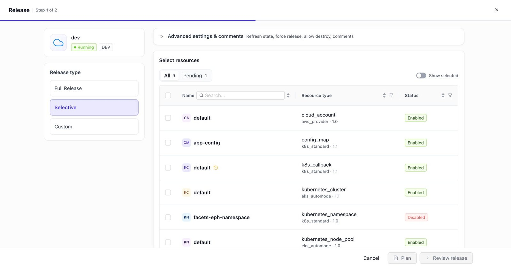
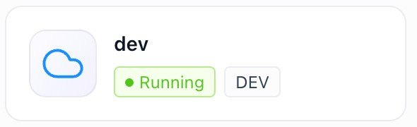
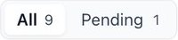
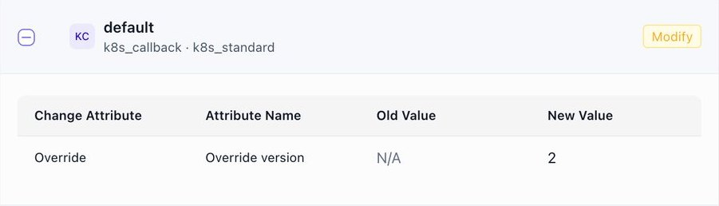
Part of the Facets platform rebuild
Facets is a tool companies use to set up and change the cloud servers and databases their apps run on.
With Facets, developers make these changes themselves, like giving an app more memory, instead of raising a ticket with the DevOps team and waiting. Every change goes live through the release flow, the most-used part of Facets.
Facets lets a company's engineers change their own cloud infrastructure, without waiting on a platform team. Every change reaches production through one flow, the release. Some companies release 4,000 times a month, and one wrong release can take their product down.
Engineers couldn't see what a release would change. In most releases, they left the flow to check each resource's settings, then came back to release. On the most-used flow in the product, every team paid that cost many times a day.
I redesigned the release around four things engineers need to know before they press Release: what's waiting, what will change, what's broken, and where it's going. A small fix shipped overnight, before the platform rebuild. The full redesign shipped with the rebuild.
Releasing a change takes 53% less time (70s → 33s), and 1.1 passes through the flow instead of 2.3. Engineers see what will change before it goes live.
Developers ship more code than a small platform team can check. Facets lets that team set the rules once, so developers can release their own changes.
Releases their own changes. Wants them live without having to learn infrastructure.
Sets the rules once, instead of releasing every change. If production breaks, they still have to fix it.
Wants the team to ship more, without hiring more platform or DevOps engineers.
Developers now release their own changes. So releasing has to be simple to get right.
My job was to make the release clear enough that a developer can do it alone, without confusion and without breaking anything.A wrong release is fixed with another release. Until then, the product can stay down.
Some companies release 4,000 times a month. A larger customer has 1,000 to 2,000 resources in one environment.
Before pressing Release, a developer needs to know four things
Which resources have pending changes, out of 1,000 or more
Which settings will change, and from what to what
Whether any change has an error that will break production
Which environment the release goes to, such as dev or production
Click through the old flow. Each screen marks what went wrong, and which of the four needs it fails to show.
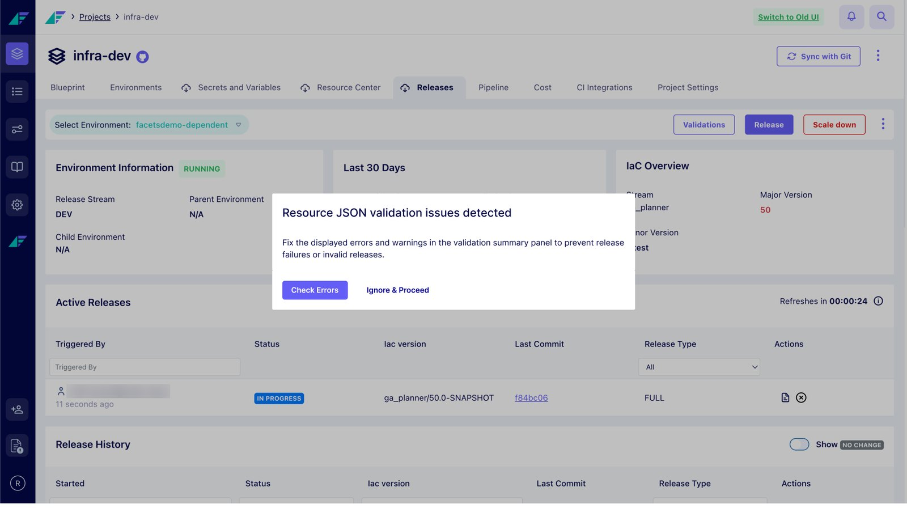
Stopped every release, even when the warnings didn't matter 90% of the time, people clicked Ignore & Proceed Check Errors took you out of the flowMost warnings didn't matter, and people knew it, so they skipped them. A release should stop only for an error that will break production.
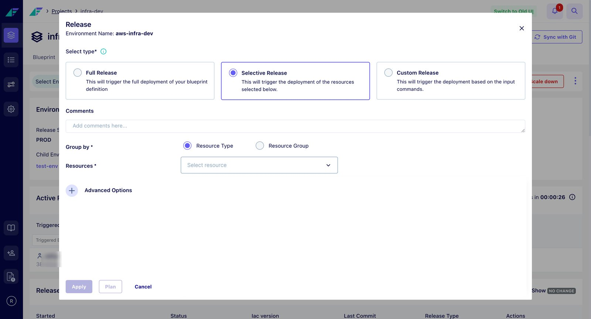
The environment, named once in small text Release type took the top of the dialog The most important choice, what to release, got one small fieldChoosing what to release is the most important part of a release. It got one small dropdown, below the release type and comments.
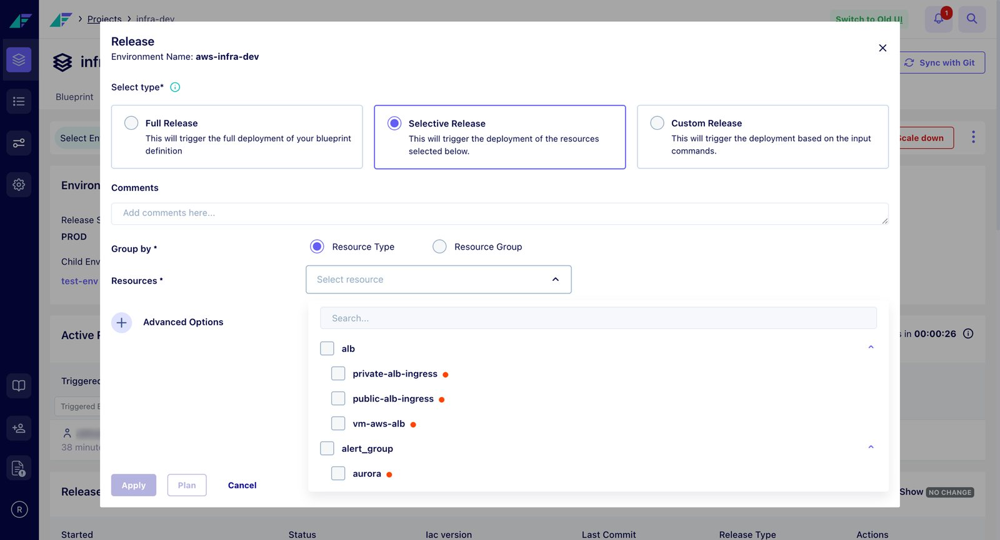
About 4 resources at a time, out of 1,000 or more The dot meant on or off, not "has changes"Nothing showed which resources had pending changes, so people typed names from lists they kept in Slack.
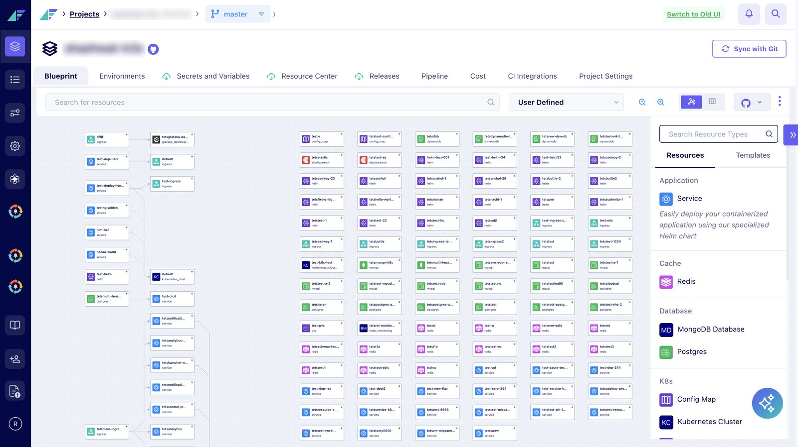
In most releases, people left the flow to check each resource's settings hereThen back to the dropdown to find each resource again, and finally Apply.
of warning popups ended with Ignore & Proceed.
In most releases, people left the flow to check each resource's settings, then came back.
Release exactly the change I mean, to the right environment, without breaking production.
The flow didn't show which resources had changes waiting, what each would change, or which warnings mattered.
People left the flow to check, kept lists in Slack, dismissed 90% of warnings, and took 2.3 passes to get one release out.
How might we show what needs releasing, without knowing its name?From: release lists kept in Slack
How might we show what will change before it runs?From: leaving the flow to check each resource
How might we stop people only for something that will break?From: 90% of warnings dismissed
How might we keep the environment in view the whole time?From: catching the wrong environment mid-release
The PM didn't want to replace the most-used flow with a new one, because every team used it many times a day and would have to learn it again. With that limit, I first shipped the smallest change with the most impact, and saved the full redesign for the platform rebuild.
The PM wanted the most-used flow kept as it was, so I changed only the dropdown. A Release Pending filter and a clock show which resources have pending changes, and type icons make each group easier to recognise. Users told us it helped: they could now see which changes were still pending.
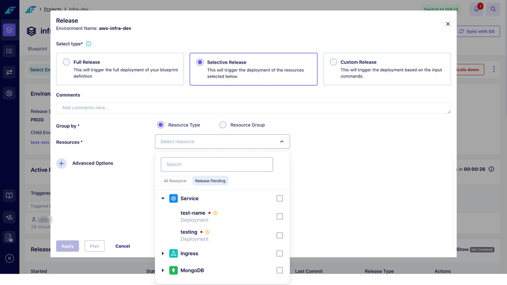
Release Pending: only resources with pending changes A clock on each resource with pending changes Grouped by type, with iconsI first designed this as three steps, then cut it back to one dialog, so there was no new flow to learn. The dropdown became a table with each resource's status and filters, and Review Release became the main button: a new step that shows what will change. Then the platform rebuild started, and this became the plan for it.
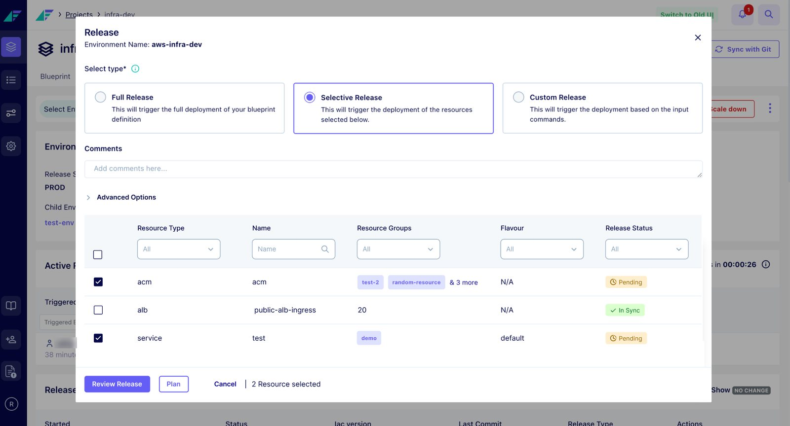
A filter on every column, and select all Pending or In Sync, for every resource Review Release added: a new step that shows what will change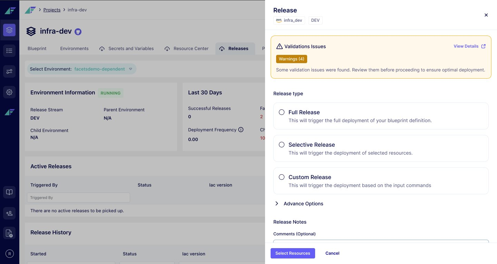
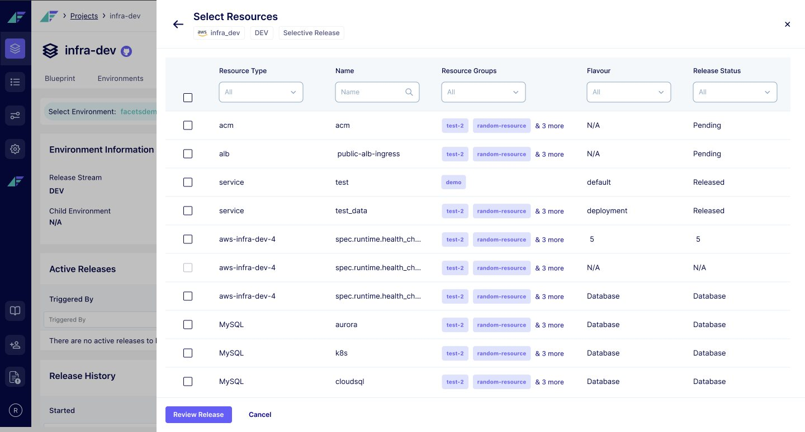
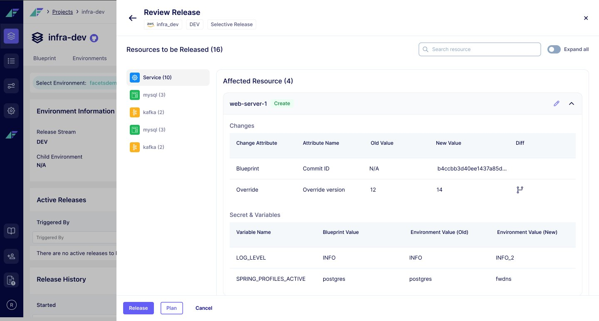
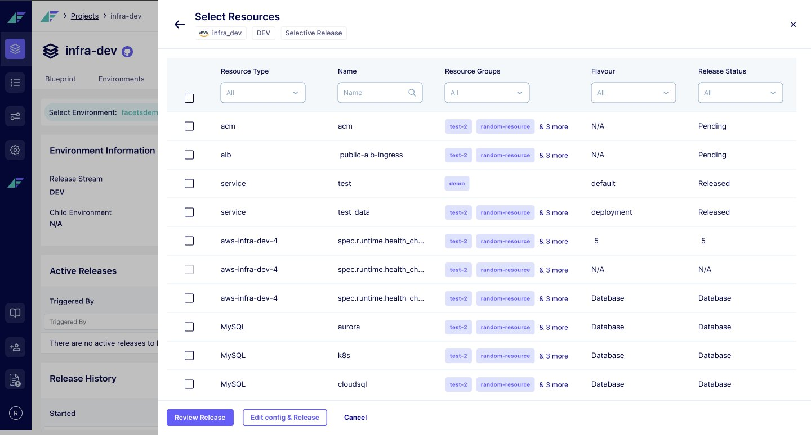
Edit config & Release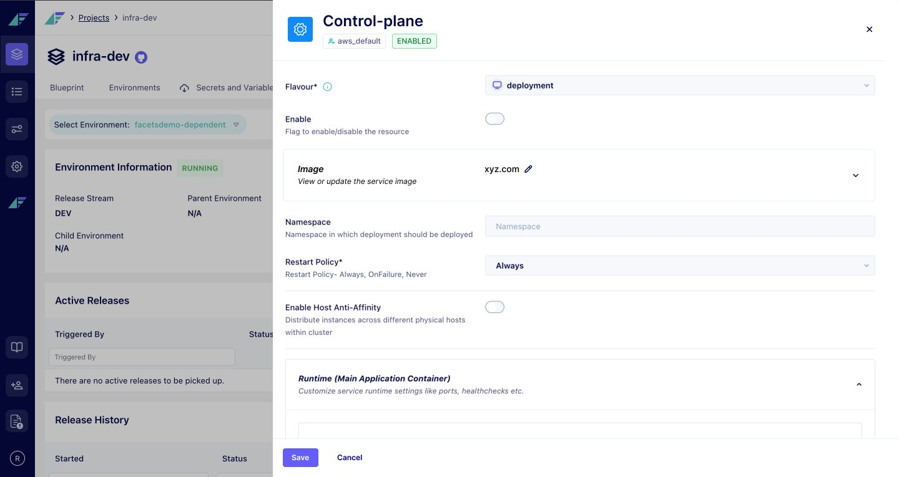
The platform rebuild made a new flow possible, so I replaced the dialog. Choosing resources got the whole panel, and reviewing became its own step. The details are below.
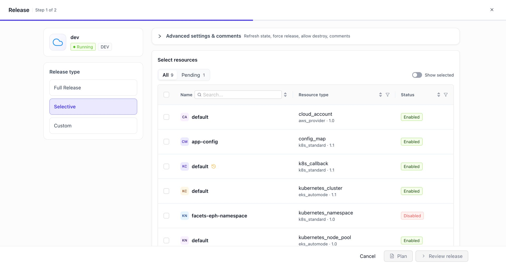
The environment and release type, always in view Choosing resources gets most of the panelThe release now has two steps: choose resources, then review what will change. Reviewing is an extra step, but releasing still takes less time, because nobody leaves the flow to check.
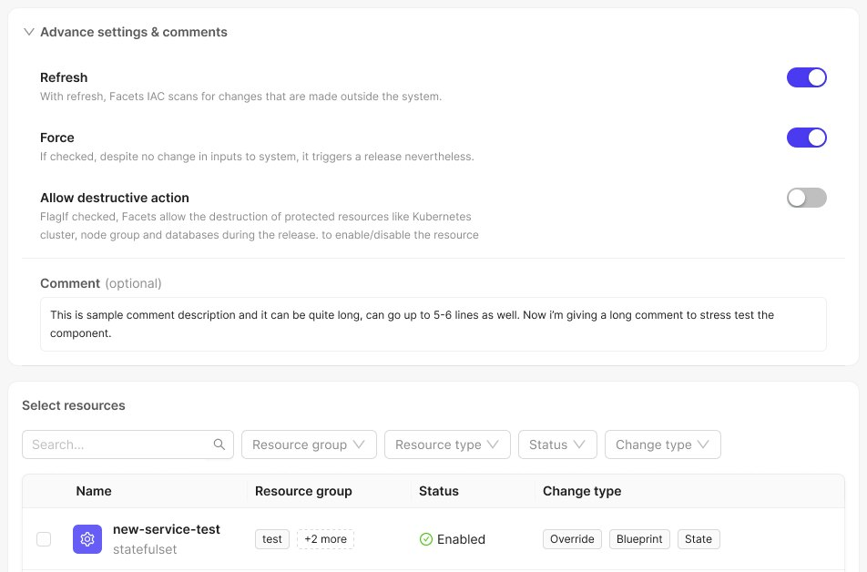
Dropped: open settings pushed the resource list, the main work, down the screen.
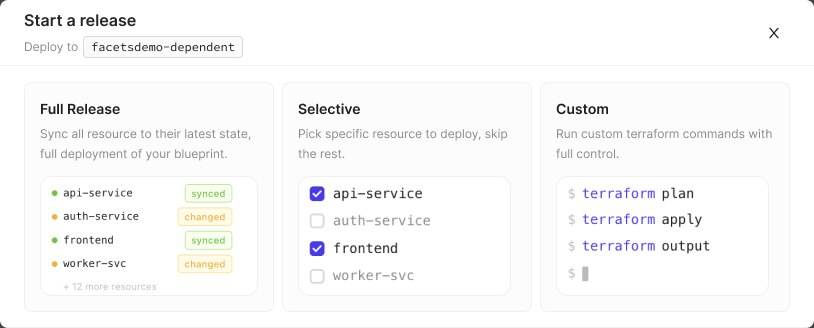
Dropped: release type is one simple choice. A screen of its own added a step before the real work.
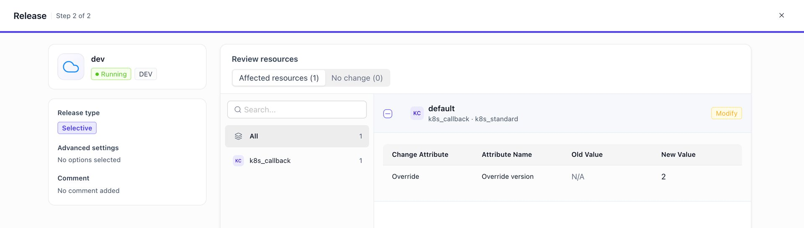
1 2 3 4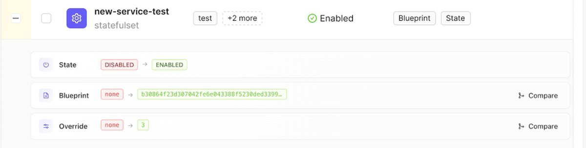
Dropped: one step would ask you to choose and check at the same time, and the list would grow long enough to need pages.
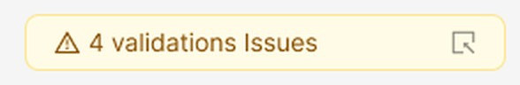
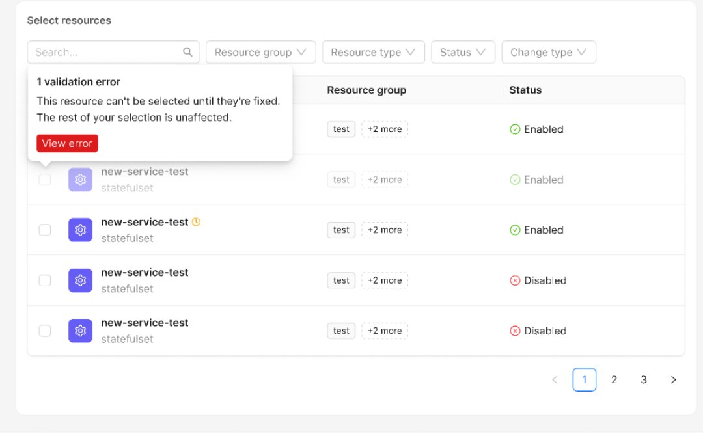
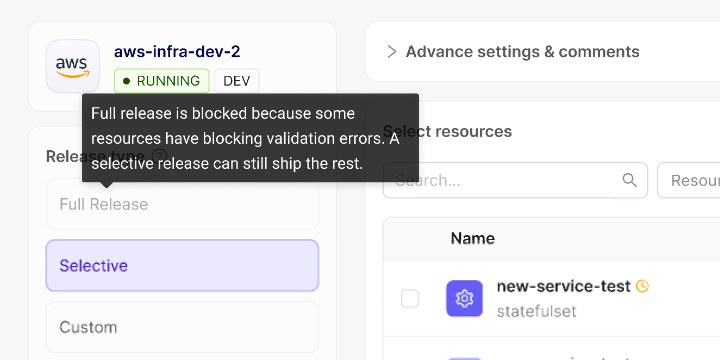
Anything blocked stays visible, turned off, with its reason. If it disappeared, people would think it was a bug.
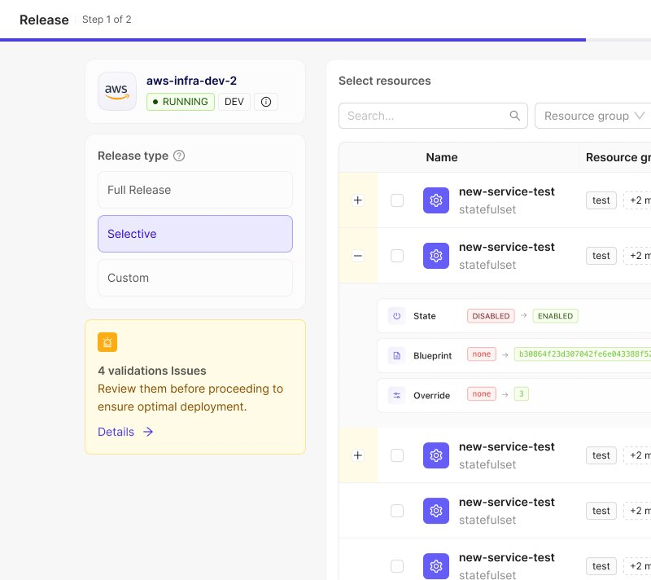
A big warning card, below the release typeDropped: a big card drew attention to warnings that people skipped anyway.
Before: the popup blocked every release with warnings, and 90% of the time people clicked Ignore & Proceed.
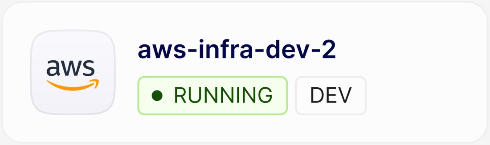
How many passes through the flow it took to get one release out. Each time someone left to check something and came back, it took another pass.
The same cost in seconds, from opening the flow to submitting the release.
People always came back and released in the end, so drop-off stays flat. Every customer moved to the rebuilt platform, so adoption is complete either way. I timed and counted the same release tasks, before and after.
53% less time to release a change
70s → 33s, from opening the flow to submitting the release, on the same release tasks before and after. The time fell because the checking moved inside the flow.passes through the flow to get one release out, on the same tasks.
no longer stops a whole release. It's blocked on its own, and the rest ship.